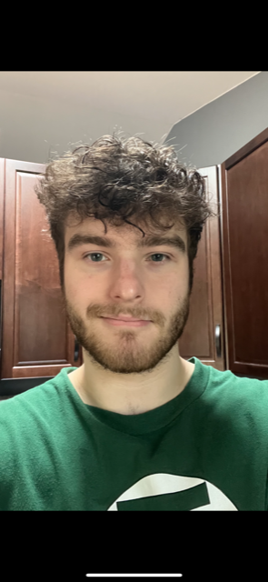

Discord: Ocean Man#6609
My name is Eric Murgas. I am a Junior at Lewis University, part of the class of 2025. I am majoring in Aviation Administration. I am from Oswego, Illinois, and live with my parents, sister, and our three animals. My uncle and cousin are also in the aviation field, which sparked my interest. Initially, I pursued a flight major, but after a few flights, I decided it wasn't for me and switched to Aviation Administration. I love Lewis University and can't wait to see where the next few semesters take me.
My favorite hobby is playing Tennis. In high school, I was on the varsity team and played doubles. I've been playing tennis for over four years and made many friends on the team. I also enjoy playing chess, and I was the captain of the high school chess team for two years. In college, I didn't find a competitive chess team, but I still enjoy playing with friends.
A fun fact about me is that I have food allergies. I am allergic to peanuts and eggs. However, in 2019, I underwent a treatment called OIT that allowed me to overcome these allergies. I still carry an EpiPen just in case, but I can now consume eggs and peanuts.